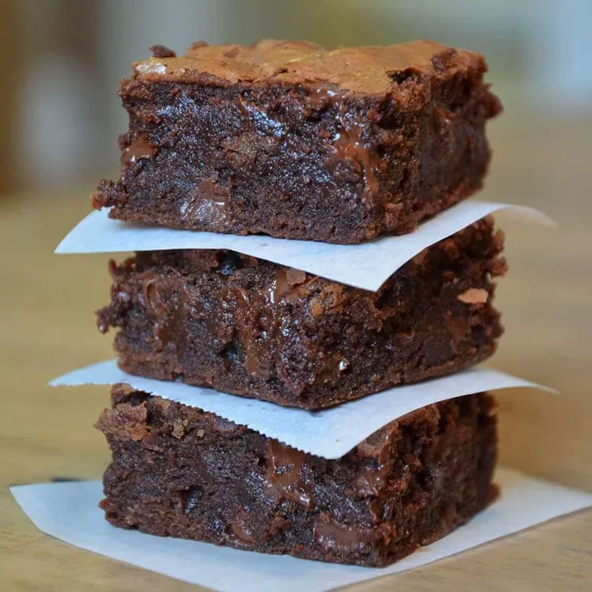

Odin Recipes
Brownies

Ingredients
- 2 cups white sugar
- 1.5 cups all-purpose flour
- 1 cup butter, melted
- 4 eggs
- 0.5 cups cocoa powder
- 1 teaspoon vanilla extract
- 0.5 teaspoons baking powder
- 0.5 teaspoons salt
- 0.5 cups walnut halves
Steps
- Preheat the oven to 350 degrees F (175 degrees C).
- Grease a 9x13-inch pan.
- Mix sugar, flour, melted butter, eggs, cocoa powder, vanilla, baking powder, and salt in a large bowl until combined.
- Spread the batter into the prepared pan. Decorate with walnut halves.
- Bake in the preheated oven until top is dry, for about 20 to 30 minutes.
- Cool before slicing into squares.